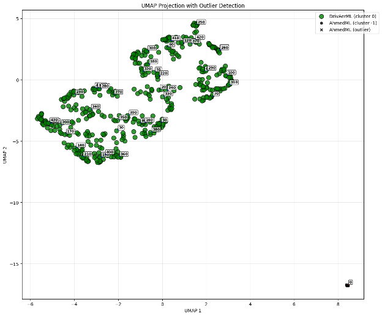
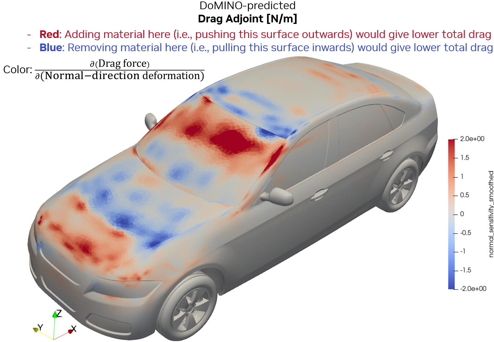
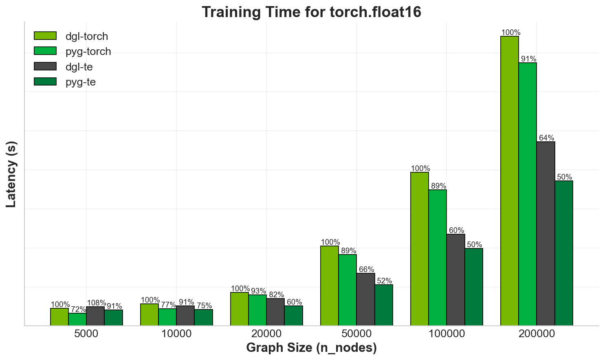

PhysicsNeMo 25.08 - New Release Announcement
We're excited to announce the latest PhysicsNeMo release! It's packed with powerful new workflows and recipes for CAE application developers. With a key emphasis on the developer experience, this update is designed to help you build, train, and deploy state-of-the-art Physics AI solutions with unprecedented speed and simplicity. We've streamlined every step of the process, from data prep to model evaluation, so you can focus on innovation, not infrastructure. Here are some key highlights of this release:
Improved Developer Experience
As PhysicsNeMo continues to grow exponentially with new functionality, we are constantly working to make onboarding and getting started easy for new developers. We have simplified the getting started step and created a unified documentation experience for the PhysicsNeMo framework, adding even more documentation to aid new developers. For instance, the user guide now includes how-tos for every step of the process from data prep to model evaluation. This will ensure PhysicsNeMo fits seamlessly and incrementally into your PyTorch projects.
We have also added a bunch of new recipes and workflows to give CAE developers an ideal starting point for custom solution development. By providing an easy, replicable proof of concept samples and guidance on how to adapt for custom use cases, these samples can save you months of development time and engineering effort that you’d otherwise spend building from scratch in PyTorch. In this release, we have introduced new training recipes for developing AI surrogates for:
- Large deformation problems
- Full waveform inversion
- CFD applications using transformers
We also added new training content for beginners for using pretrained models from Hugging face in PhysicsNeMo as well as for problems involving magneto hydrodynamics.
Confidence scores and reliability
Error quantification is essential for building trust in AI surrogate models. It essentially provides guard rails for AI which is vital information for engineers informing them on how much to rely or not rely on AI for the specific task. AI powered CAE applications need to provide appropriate reliability or confidence metrics when using AI surrogates, especially when you are evaluating pretrained models.
We're excited to release a new workflow for CAE application developers that helps with this key challenge. A reference sample that demonstrates a few different ways to estimate the confidence of AI surrogate model prediction using DoMINO NIM has been added. This can be extended to any pre-trained model:
- Sensitivity to Input (STL) Resolution: By creating realizations of the input STL at various mesh densities and distributions, we can study the uncertainty of the surrogate prediction to the STL's resolution
- Sensitivity to Model bias: By using an ensemble of checkpoints trained on the same data, we can study the uncertainty of the surrogate prediction
- Sensitivity to ground truth data distribution: By quantifying the similarity of the given input geometry, we can estimate the confidence of the surrogate prediction in terms of in-distribution or out-of-distribution
You can get started with this detailed Jupyter Notebook.
Finetuning DoMINO
Model finetuning is a key step of taking a pre-trained model and specializing it on your own custom data. This may be necessary to achieve state-of-the-art accuracy on your custom data, especially if the confidence of the pretrained model is below your acceptable threshold. Finetuning transforms a generalist model into a custom model for your specific scenario. It does this with a fraction of the data and computational cost than training a model from scratch. It makes the model's outputs more reliable, relevant, and tailored to your custom scenario.
We are thrilled to release a new training recipe that brings the power of model finetuning to external aerodynamics use cases. This recipe relies on two key pillars:
-
The Domino-Automotive-Aero NIM: The starting point of finetuning workflow is a pretrained model. DoMINO NIM trained on a large corpus of automotive geometries encapsulates the general physics of fluid flow over a car geometry and is available as a NVIDIA Inference Microservice (NIM).
-
Finetuning algorithm: The recipe introduces a Predictor-Corrector Approach where in the pretrained model serves as a predictor and a user-specified model can be trained as a corrector that learns from the custom data.
The predictor-corrector methodology is described below: Y_finetuned = Y_predictor + Y_corrector
Early work has shown an order of magnitude improvement in compute efficiency as detailed in the documentation. This should enable CAE application developers and AI researchers to easily experiment with finetuning and contribute in developing these methods even further.
Data Curation Enhancements
To effectively finetune a model, you need to analyze and understand the distribution of the ground truth dataset of the pretrained model. This helps CAE developers to then analyze and compare their custom data to the ground truth dataset. This way, they can figure out which data samples are good for finetuning and which ones are already similar to what the model has seen. A common question from CAE developers is: "What data, and how much of it, do I need to finetune the model to make it more accurate for my custom data?" In this release, we have introduced a new workflow to enable CAE developers to visualize the complex high dimensional simulation dataset in an analyzable lower dimensional manner. We have provided a reference recipe for the external automotive aerodynamics use case. In this recipe, we picked Uniform Manifold Approximation and Projection (UMAP) to find a low dimensional representation of the dataset and we analyzed the DrivAerML, and AhmedML datasets. This should empower CAE developers to run their own analyses to understand the distribution of their custom data. You can get started with this jupyter notebook.

Mixture of Experts
We have talked about improving the accuracy of a surrogate model on custom data through finetuning. But there is another powerful method that is showing promise in improving accuracy in a computationally efficient manner: “Mixture of Experts” (MoE).
The core idea behind MoE is that instead of relying on just one model, a MoE model combines the strengths of several specialized models. A “gating network” learns to assign specific weights to each “expert” (model) based on the input, allowing the model to selectively emphasize the most relevant predictions. An entropy loss function is used to produce reliable weight distributions across the experts. This results in more dependable and accurate predictions compared to using individual experts alone.
We have introduced two MoE training recipes, one for external aerodynamics and one for weather forecasting. For example, the MoE model for external aerodynamics combines predictions from multiple expert models (DoMINO, FigConvNet and X-MeshGraphNet) as input and produces a weighted combination. The weights are determined dynamically by a simple neural network based on the expert predictions. This lets CAE developers combine their custom models with pretrained models like DoMINO NIM to get the best skill for their Physics AI solution.
Derive Design Sensitivities to guide design optimization
Beyond all these new workflows, we have also introduced a new downstream workflow showcasing use of surrogate models for design optimization. This workflow shows how to use AI models for Design Sensitivity Prediction. The reference sample provides a template for using AI surrogate to predict not just the performance of a design, but also its sensitivities—how that performance will change with small modifications to the geometry. This can dramatically accelerate a critical and traditionally slow part of the engineering design process.
This new sample uses the external automotive aerodynamics use case model to demonstrate how the DoMINO model architecture can accurately predict the sensitivity of the drag coefficient to changes in the vehicle's shape. This is a game-changer for CAE application developers who can now allow their users, the engineers to rapidly identify which geometric features have the most significant impact on aerodynamic performance. This sample provides a workflow for CAE application developers to use their own custom models in building such functionality using PhysicsNeMo. You can get started with this Jupyter notebook and detailed documentation.

Performance Optimizations - GNN, Transformers
This release also delivers performance improvements for GNNs and Transformer architectures. By adding support for PyTorch Geometric (PyG) and optimizing core layers through the transformer engine, we have seen significant speedups. For instance, training the MeshGraphNet model on meshes up to 200k nodes and 1.2M edges in a single graph shows approximately 1/3 reduction in runtime. With Pytorch Geometric, the latency for the training iteration is cut in half. For Transformer based architectures such as Transolver, we see strong out of the box performance. Additionally, the Transovler example for external aerodynamics enables fp8 training and inference using NVIDIA's optimized Transformer Engine backend. So just by importing PhysicsNeMo with your existing GNN or transformer models in PyTorch, you will see such optimized performance and scalability benefits. For more details, please refer to the detailed documentation.

Takeaways
If you are a CAE developer or a Physics AI researcher, PhysicsNeMo is a powerful tool in your arsenal to supercharge and extend your PyTorch stack. Instead of building everything from scratch, you can import PhysicsNeMo modules to build enterprise scale Physics AI solutions with unprecedented speed and simplicity. You can get started easily and step by step using these resources: